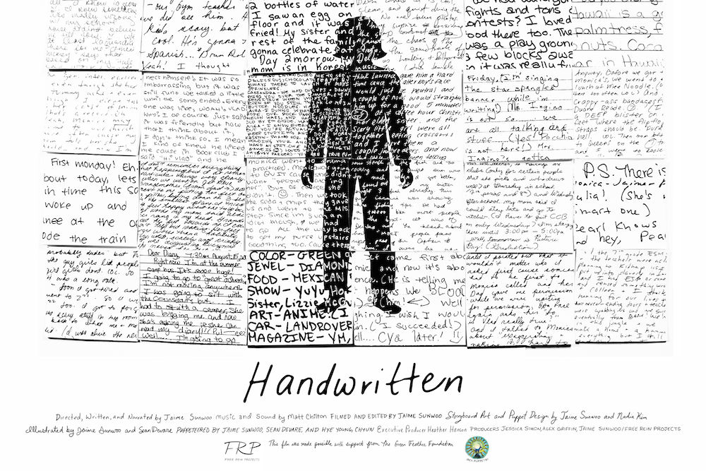
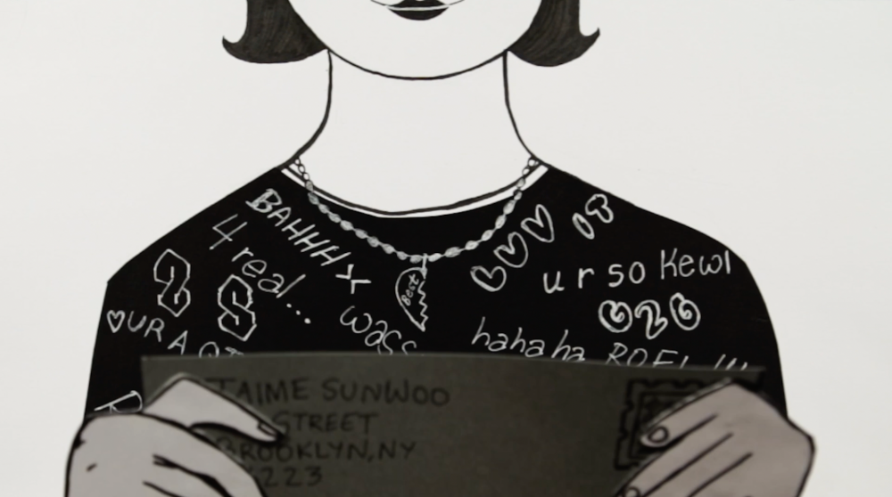
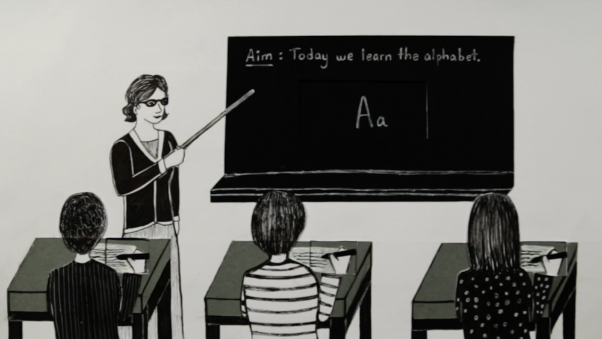
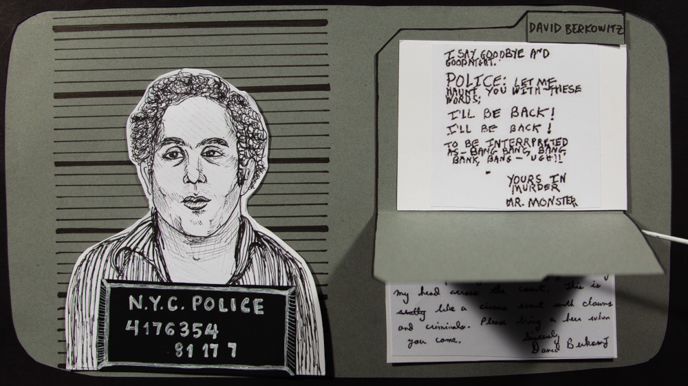
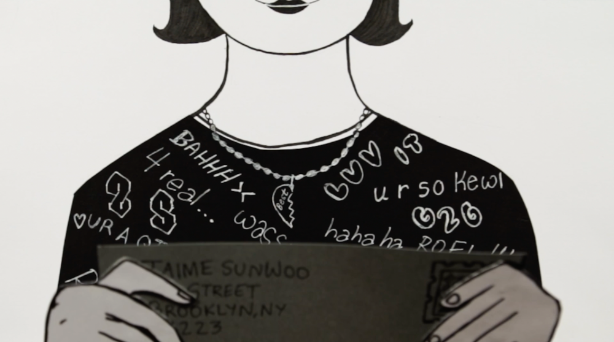
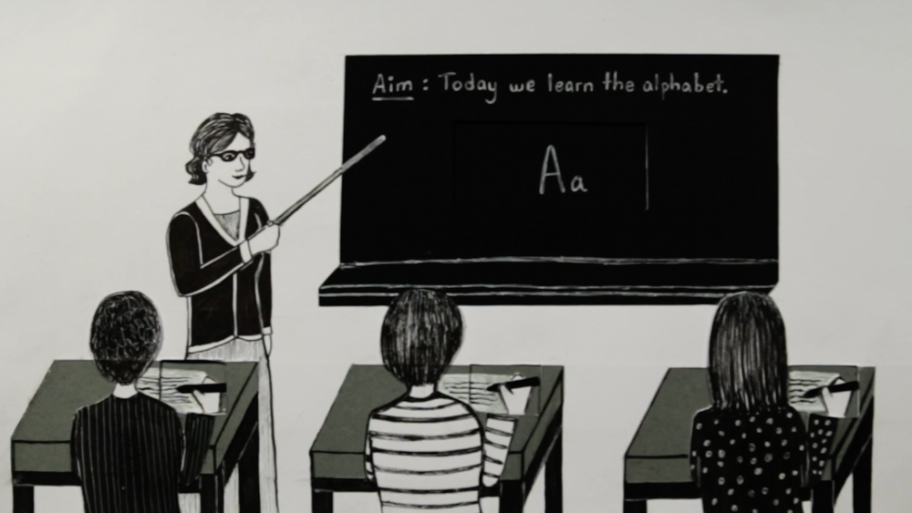
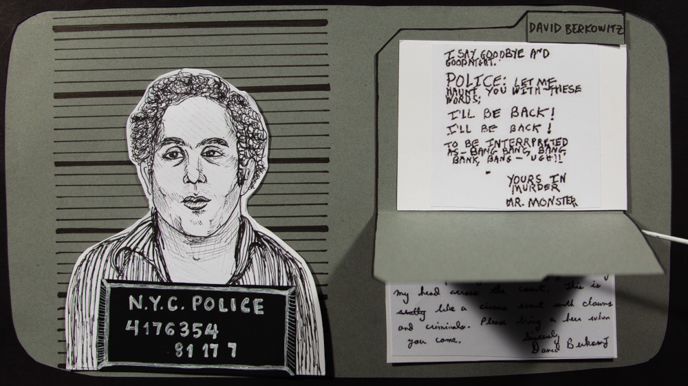

Handwritten

(To request access, please contact sunwooprojects@gmail.com)
Handwritten by Jaime Sunwoo is a personal reflection on the significance
of handwriting in her own life and throughout history, which was sparked
by the fact that she has never had a consistent handwriting style.
- Directed, Narrated, Written, Filmed, and Edited by Jaime Sunwoo
- Music and Sound by Matt Chilton
- Storyboard and Puppet Design by Jaime Sunwoo and. Nadia Kim
- Illustrated by Jaime Sunwoo and Sean Devare
- Puppeteered by Jaime Sunwoo, Sean Devare, and Hye Young Chyun
- Executive Producer: Heather Henson
- Producers: Jessica Simon, Alex Griffin, and Jaime Sunwoo/Free Rein Projects
- Executive Producer: Heather Henson
Puppeteered by Jaime Sunwoo, Sean Devare, and Hye Young Chyun
-
Co-produced by Ibex Puppetry and Free Rein Projects with support from
the Green Feather Foundation
Screenings
-
Sebastopol Documentary Film Festival - Nominated for
Best Short Documentary, Academy Award Qualifying
- Indy Film Fest - Awarded Best Short Documentary
- USA Film Festival - Awarded Best Short Documentary
- American Pavilion Emerging Filmmaker Showcase at the Cannes Film Festival
- Seattle Asian American Film Festival
- Cinequest Film & VR Festival
- SPE Media Festival
- The Art of Brooklyn Film Festival
- The ASIFA-East Animation Festival
- Astoria Film Festival
- NewFilmmakers NY
- Los Angeles International Children's Film Festival
- KIDS FIRST! Film Festival
- Atlanta Children's Film Festival
<< Back
{kind=link}
{kind=link}
 





{kind=link}
{kind=link}
{kind=link}